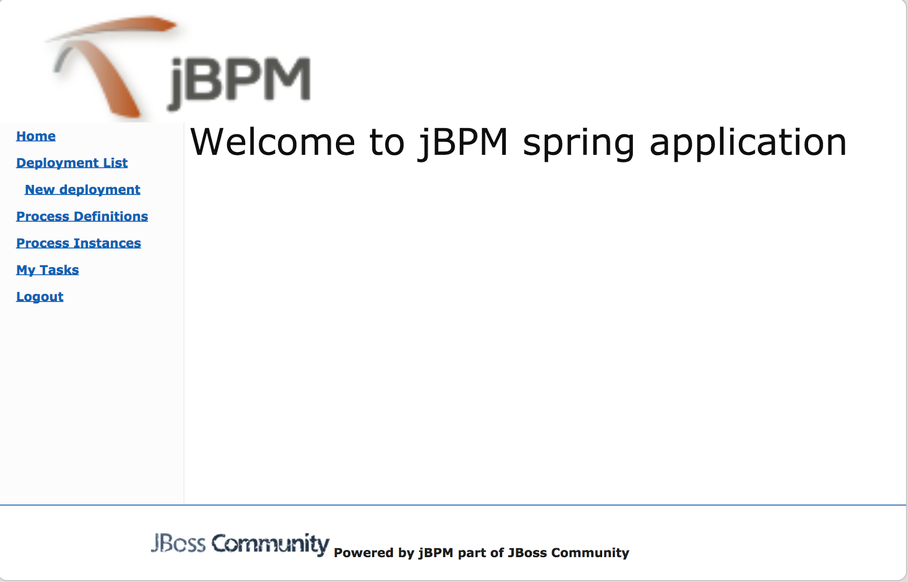

Cross framework services in jBPM 6.2
- jar based deployment units – kjar
- deployment descriptors for kjars
- runtime manager with predefined runtime strategies
- runtime engine with configured components
- KieSession
- TaskService
- AuditService (whenever persistence is used)
- favor use of RuntimeManager and RuntimeEngine whenever performing work instead of using cached ksession and task service instance
- Cache only RuntimeManager not RuntimeEngine or runtime engine’s components
- Creating runtime manger requires configuration of various components via runtime environment – way more simplified compared to version 5 but still…
- On request basis always get new RuntimeEngine with valid context, work with ksession, task service and then dispose runtime engine
Rise of jBPM services (redesigned in version 6.2)
- jbpm-services-api – contains only api classes and interfaces
- jbpm-kie-services – rewritten code implementation of services api – pure java, no framework dependencies
- jbpm-services-cdi – CDI wrapper on top of core services implementation
- jbpm-services-ejb-api – extension to services api for ejb needs
- jbpm-services-ejb-impl – EJB wrappers on top of core services implementation
- jbpm-services-ejb-client – EJB remote client implementation – currently only for JBoss
DeploymentService
// create deployment unit by giving GAV
DeploymentUnit deploymentUnit = new KModuleDeploymentUnit(GROUP_ID, ARTIFACT_ID, VERSION);
// deploy
deploymentService.deploy(deploymentUnit);
// retrieve deployed unit
DeployedUnit deployed = deploymentService.getDeployedUnit(deploymentUnit.getIdentifier());
// get runtime manager
RuntimeManager manager = deployed.getRuntimeManager();
DefinitionService
Upon deployment, every process definition is scanned using definition service that parses the process and extracts valuable information out of it. These information can provide valuable input to the system to inform users about what is expected. Definition service provides information about:
- process definition – id, name, description
- process variables – name and type
- reusable subprocesses used in the process (if any)
- service tasks (domain specific activities)
- user tasks including assignment information
- task data input and output information
String processId = "org.jbpm.writedocument";
Collection<UserTaskDefinition> processTasks =
bpmn2Service.getTasksDefinitions(deploymentUnit.getIdentifier(), processId);
Map<String, String> processData =
bpmn2Service.getProcessVariables(deploymentUnit.getIdentifier(), processId);
Map<String, String> taskInputMappings =
bpmn2Service.getTaskInputMappings(deploymentUnit.getIdentifier(), processId, "Write a Document" );
While it usually is used with combination of other services (like deployment service) it can be used standalone as well to get details about process definition that do not come from kjar. This can be achieved by using buildProcessDefinition method of definition service.
Definition service interface can be found here.
ProcessService
Process service is the one that usually is of the most interest. Once the deployment and definition service was already used to feed the system with something that can be executed. Process service provides access to execution environment that allows:
- start new process instance
- work with existing one – signal, get details of it, get variables, etc
- work with work items
KModuleDeploymentUnit deploymentUnit = new KModuleDeploymentUnit(GROUP_ID, ARTIFACT_ID, VERSION);
deploymentService.deploy(deploymentUnit);
long processInstanceId = processService.startProcess(deploymentUnit.getIdentifier(), "customtask");
ProcessInstance pi = processService.getProcessInstance(processInstanceId);
Process service interface can be found here.
RuntimeDataService
Runtime data service as name suggests, deals with all that refers to runtime information:
- started process instances
- executed node instances
- available user tasks
- and more
1. get all process definitions
Collection
2. get active process instances
Collectioninstances = runtimeDataService.getProcessInstances(new QueryContext());
3. get active nodes for given process instance
Collectioninstances = runtimeDataService.getProcessInstanceHistoryActive(processInstanceId, new QueryContext());
4. get tasks assigned to john
ListtaskSummaries = runtimeDataService.getTasksAssignedAsPotentialOwner("john", new QueryFilter(0, 10));
- QueryContext
- QueryFilter – extension of QueryContext
Runtime data service interface can be found here.
UserTaskService
User task service covers complete life cycle of individual task so it can be managed from start to end. It explicitly eliminates queries from it to provide scoped execution and moves all query operations into runtime data service.
Besides lifecycle operations user task service allows:
- modification of selected properties
- access to task variables
- access to task attachments
- access to task comments
On top of that user task service is a command executor as well that allows to execute custom task commands.
Complete example with start process and complete user task done by services:
long processInstanceId =
processService.startProcess(deployUnit.getIdentifier(), "org.jbpm.writedocument");
List<Long> taskIds =
runtimeDataService.getTasksByProcessInstanceId(processInstanceId);
Long taskId = taskIds.get(0);
userTaskService.start(taskId, "john");
UserTaskInstanceDesc task = runtimeDataService.getTaskById(taskId);
Map<String, Object> results = new HashMap<String, Object>();
results.put("Result", "some document data");
userTaskService.complete(taskId, "john", results);
That concludes quick run through services that jBPM 6.2 will provide. Although there is one important information left to be mentioned. Article name says it’s cross framework services … so let’s see various in action:
- CDI – services with CDI wrappers are heavily used (and by that tested) in jbpm console – kie-wb. Entire execution server that comes in jbpm console is utilizing jbpm services over its CDI wrapper.
- Ejb – jBPM provides a sample ejb based execution server (currently without UI) that can be downloaded and deployed to JBoss – it was tested with JBoss but might work on other containers too – it’s built with jbpm-services-ejb-impl module
- Spring – a sample application has been developed to illustrate how to use jbpm services in spring based application
The most important thing when working with services is that there is no more need to create your own implementations of Process service that simply wraps runtime manager, runtime engine, ksession usage. That is already there. It can be nicely seen in the sample spring application that can be found here. And actually you can try to use that as well on OpenShift Online instance here.
 |
| Go to application on Openshift Online |
Just logon with:
- john/john1
- mary/mary1
- deployments performed on any of the application will be available to all applications automatically
- all process instances and tasks can be seen and worked on via every application